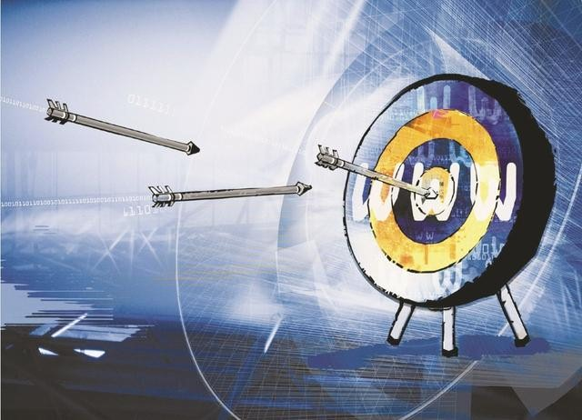
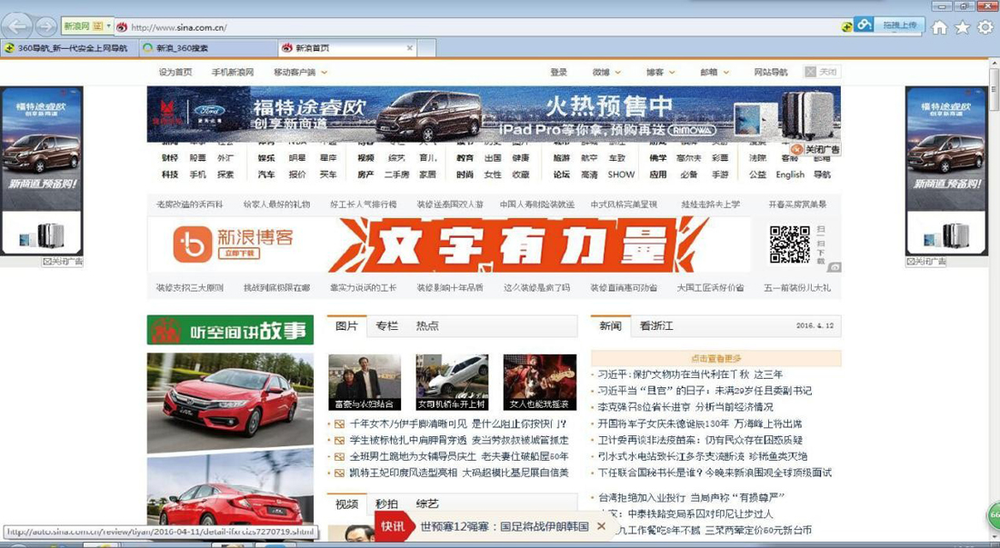

云瑞兆信揭开真相：不是所有互联网广告都叫精准广告
2016-06-12,10:35
艾瑞发布的最新报告显示，2015年中国网络广告市场规模已达到2093.7亿元！中国互联网广告在十几年内从粗放型发展进入了精准时代。但国内生态的良莠不齐不禁让人疑惑：究竟什么是精准广告？今天，云瑞兆信就来为营销人揭开虚伪假面：不是所有互联网广告都叫精准广告！

认清三类互联网广告，大数据助力精准营销
托云计算和大数据的福，精准广告的价值正在被迅速放大，广告主也奉精准广告为营销利器，但真的做到"精准"了吗？
首先，应该搞清楚互联网广告究竟有哪些?我们把目前的互联网广告分为三大类：
1、 伪互联网广告：广告主购买某网站固定广告位。这种“购买广告位获得广告展现”的商业模式与传统广告没有任何差异，只是传播介质由报纸、杂志或电视变成了互联网。
2、基于搜索的效果营销：以Google、百度为代表的搜索引擎通过关键词定位技术，将企业推广展现给搜索用户。这类广告具有一定的精准性，但是强硬的广告展现容易引起用户反感。
3、基于大数据的程序化广告：广告主通过程序化购买平台锁定目标人群，让广告更投其所好，精准、及时、有效地将广告呈现在广告对象面前，获得预期转化效果。
无疑，只有程序化广告能做到真正的精准！它的优点是显而易见的：
（1）智能广告投放，大幅降低交易费用，缩短交易时间
（2）大数据定位用户需求，有效提高媒体资源利用率。
在中国，程序化广告正处于高速发展期。国内涌现了一批可实现程序化广告投放的大数据公司，其中有“技术派”的亿玛、聚效，“品牌派”的传漾、好耶、品友，也有专注各垂直行业的云瑞兆信。
火眼金睛辨真伪：不是所有的互联网广告都叫精准广告
目前的互联网广告市场鱼龙混杂，大量广告主仍然把第一种当做精准广告，而这类广告是非常传统和原始的。花费了大把的广告费购买固定的广告位和排期，却根本无法获知目标客户会不会看到广告。广告主们可要擦亮眼睛了，比如下面这些，实际上就是披着“互联网广告”外衣的传统广告：

程序化广告与上面列举的伪互联网广告看起来貌似大同小异，但最本质的区别在于：它不是购买广告位，而是购买广告位背后的受众。通过对用户数据的分析，对受众实现精准定位，在用户点击的千分之一秒，实现了广告位和广告内容的智能精准匹配。
真正的精准：只购买目标受众，广告展现千人千面
云瑞兆信程序化广告平台就做到了数据驱动的受众购买。与那些“伪互联网广告”相比，云瑞兆信大数据精准营销让合适的广告在合适的时间，合适的场景出现在合适的受众面前。基于数据库的深度挖掘，云瑞兆信DSP在投放前形成真实立体的用户画像，包括年龄、职业、兴趣点、购买行为、搜索习惯等等，智能匹配广告资源，通过多种定向技术，让目标受众在PC端、移动端、视频端随时随地看到广告。并且广告内容定制化，不同的人打开同一个网页看到的是不同的广告，也就是千人千面。有效地提高精准广告的投放效果，实现用户体验和流量变现的双倍增长。
云瑞兆信：互联网实效营销专家
云瑞兆信定位于专注垂直领域的全产业链大数据营销公司，致力于富有实效的精准营销服务，以数据洞察营销真相，为房产家居、汽车、金融、教育、品牌等等众多领域的客户提供一站式整合营销解决方案。客户营销成本可预估，投放效果及时反馈，营销方案可循环优化。云瑞兆信作为国内大数据精准营销潮流的领军者，凭借过硬的大数据精准投放技术以及优质的资源，将会给广告主以及用户带来丰厚的效果回报。